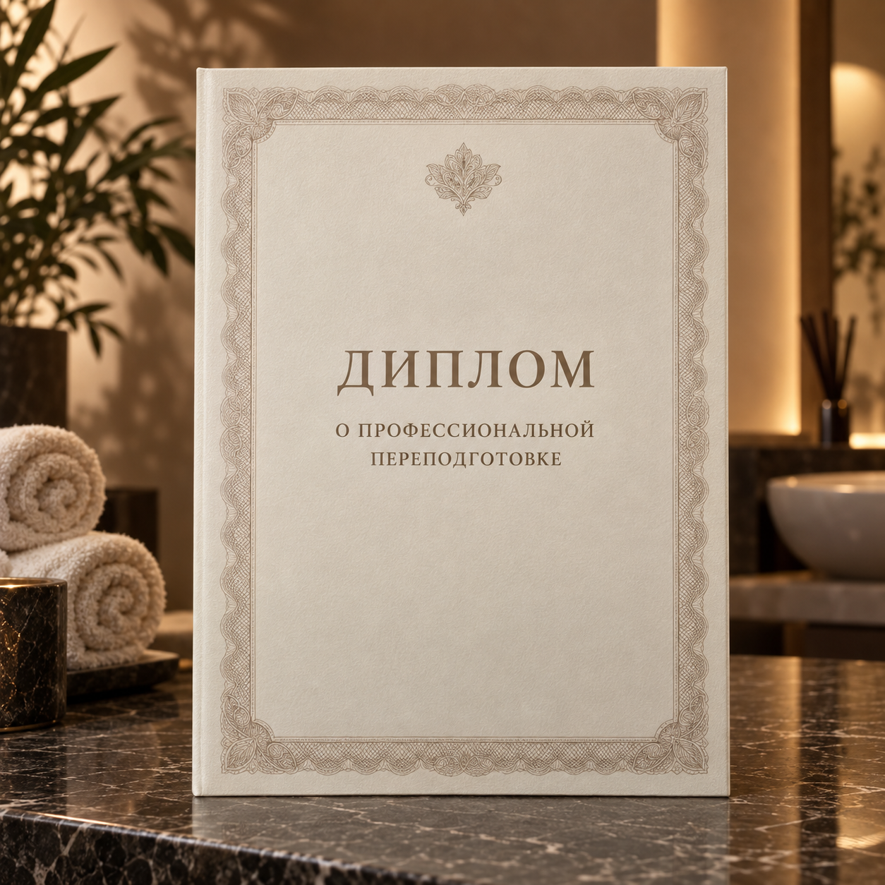
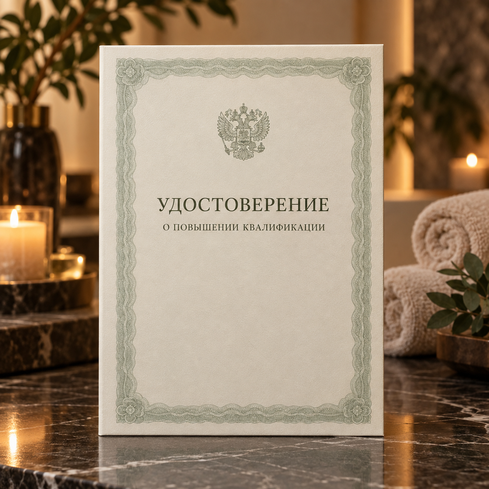

Базовый курс
Косметик-эстетист
по работе с лицом
Освоение профессии с нуля —
для тех, кто начинает путь
в эстетике.
- Очный курс
- Отработка на моделях
- Итоговая аттестация
- Диплом и ФИС ФРДО
которая
вдохновляет
Обучение в Раменском
Обучение специалистов на базе студии: очные занятия,
отработка техник на моделях и сопровождение
преподавателя.
Программы
Формат и даты ближайшего набора уточняйте
по телефону студии или в Telegram.
Базовый курс
Освоение профессии с нуля —
для тех, кто начинает путь
в эстетике.
Повышение квалификации
Отдельные направления для развития
и подтверждения профессиональных
компетенций.
Однодневный семинар
Семинар для специалистов
Документы об обучении
По результатам обучения выдаётся диплом о профессиональной переподготовке
или удостоверение о повышении квалификации. Сведения о документах вносятся
в ФИС ФРДО.

Образец документа о профессиональной
переподготовке

Образец документа о повышении
квалификации
Опыт преподавателя
Основатель студии Оксана Потоцкая участвует
в чемпионатах по массажу и эстетической косметологии
как судья, спикер и конкурсант. Этот опыт она использует
в обучении специалистов на базе студии.
Оценивает работы,
следит за стандартами
и развитием индустрии
Выступает на профильных мероприятиях, делится опытом и авторскими методиками
Ежедневно работает
с клиентами, совершенствует техники и подходы
Передаёт актуальные знания и реальный опыт новым специалистам
Передаём технику, понимание
и уверенность в работе с клиентом.
Оксана ПотоцкаяОснователь студии «Прикосновение»
Чемпионат
по массажу
и эстетике
Ближайший набор
Расскажите, чему хотите научиться и какой у вас уровень
подготовки. Ответим на вопросы о программе, датах
и документах.
Ответим лично и поможем выбрать
подходящий формат обучения.